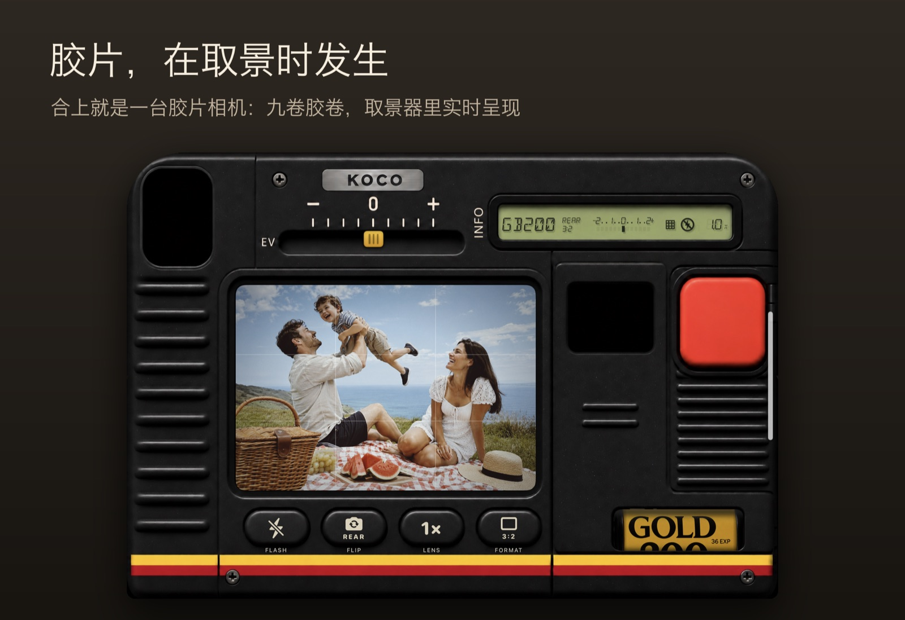
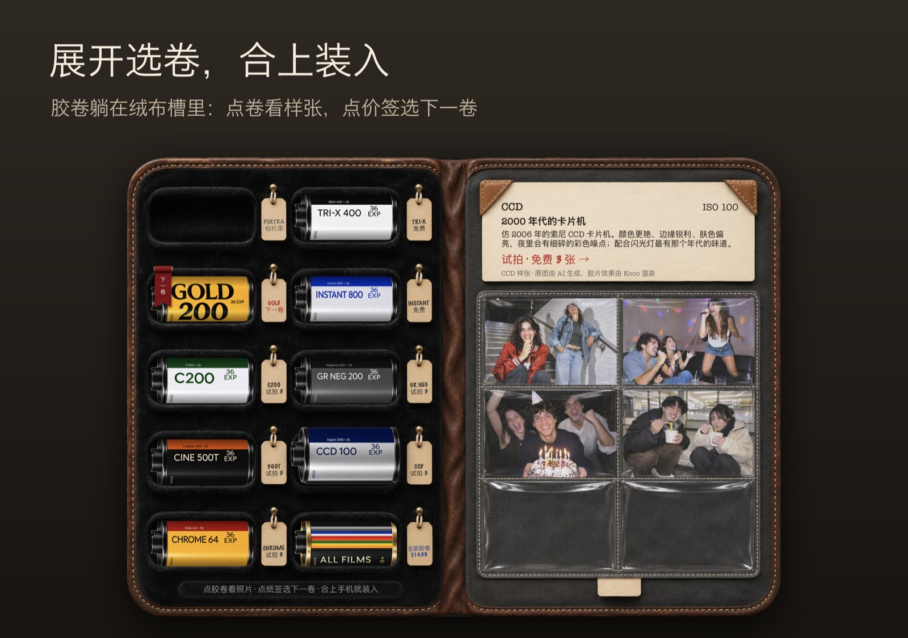

<title>Koco Duo 截图样稿</title>
<meta name="claude:viewport-fit-sides" content="cover">
<style>
:root{--bg:#f3efe6;--fg:#201c17;--muted:#6f675c;--line:#ddd5c6;--accent:#b23b1e}
@media (prefers-color-scheme:dark){:root:not([data-theme="light"]){--bg:#15130f;--fg:#ede7db;--muted:#9b9284;--line:#332e27;--accent:#ec7b52;color-scheme:dark}}
:root[data-theme="dark"]{--bg:#15130f;--fg:#ede7db;--muted:#9b9284;--line:#332e27;--accent:#ec7b52;color-scheme:dark}
body{background:var(--bg);color:var(--fg);font:16px/1.65 -apple-system,"PingFang SC",system-ui,sans-serif;padding-left:max(16px,env(safe-area-inset-left,0px));padding-right:max(16px,env(safe-area-inset-right,0px));padding-block:22px 48px}
main{max-width:900px;margin:0 auto}
h1{font-size:22px;margin:0 0 4px}
.sub{color:var(--muted);font-size:14px;margin:0 0 18px;max-width:70ch}
figure{margin:0 0 24px}img{width:100%;height:auto;border-radius:10px;display:block;border:1px solid var(--line)}
figcaption{font-size:14px;color:var(--muted);margin-top:6px}
ol{padding-left:20px;font-size:15px}li{margin:3px 0}
</style>
<main>
<h1>Duo 截图样稿</h1>
<p class="sub">App Store 给 iPhone Duo 单独留了截图位：外屏 2034×1398、内屏 2853×2007（交了之后商店页会标“为 iPhone Duo 打造”）。所以这组直接用两块屏的真实画面，不画假手机。下面两张是样稿，看风格：深色暖底、左上标题、真实界面带屏幕自己的圆角。</p>
<figure><figcaption>外屏 · 第 1 张：胶片，在取景时发生</figcaption></figure>
<figure><figcaption>内屏 · 第 3 张：展开选卷，合上装入</figcaption></figure>
<p class="sub">整套 8 张（和 GPT 商定的顺序）：</p>
<ol>
<li>胶片，在取景时发生（外屏机身）</li>
<li>折到一半，低头取景（半折：上半机身 + 下半反光取景窗）</li>
<li>展开选卷，合上装入（内屏相机包）</li>
<li>打开胶卷仓，换一种色彩（外屏开仓）</li>
<li>先试拍，再选卷（样张拖动对比）</li>
<li>锁屏，也能开拍（相机控制按钮）</li>
<li>把前后变化，分享成视频（回看时的分享）</li>
<li>照片留在你的 iPhone（隐私）</li>
</ol>
<p class="sub">普通 iPhone 的截图位是必交的，另做一组：同样风格，只是没有折叠那两张。英文版标题一起出。</p>
</main>
